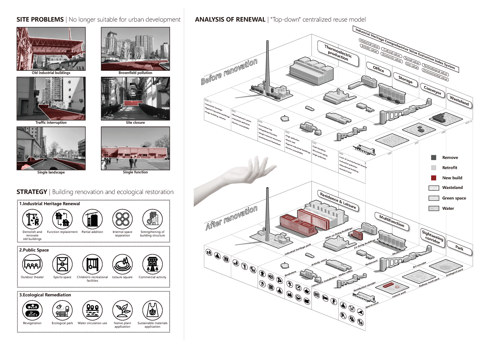
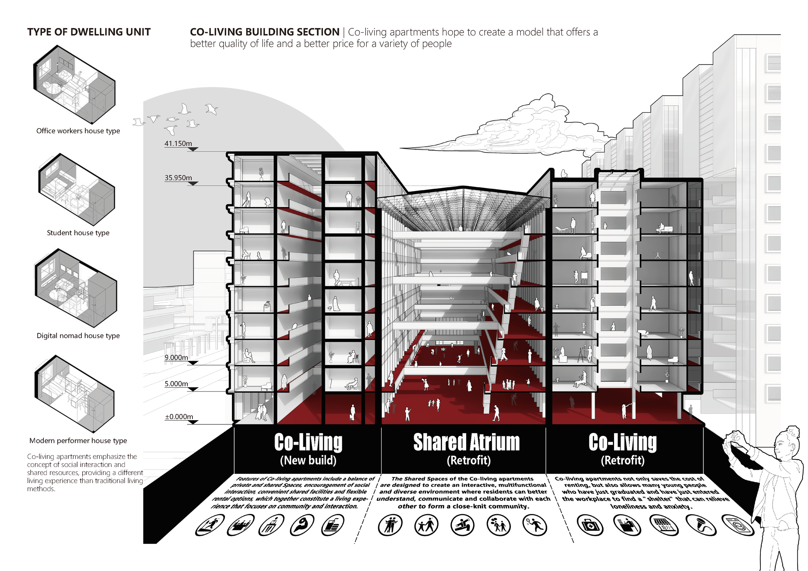

Post-industrial Renaissance
Urban Renewal Design in the Beijing Thermal Power Plant Area Based on the Co-living Concept
2021/07
Beijing, China
Project Overview
The design site, located in Beijing's Chaoyang District, aims to revitalize the abandoned industrial relics of the Beijing Thermal Power Plant. The project, based on the Co-living concept, provides diverse housing options for digital nomads, students, and entrepreneurs, fostering a unique community atmosphere. By transforming industrial relics into a vibrant residential community, the design embodies the concept of "shared rebirth," symbolizing urban revitalization, historical homage, and optimism for the future.
Project Gallery




